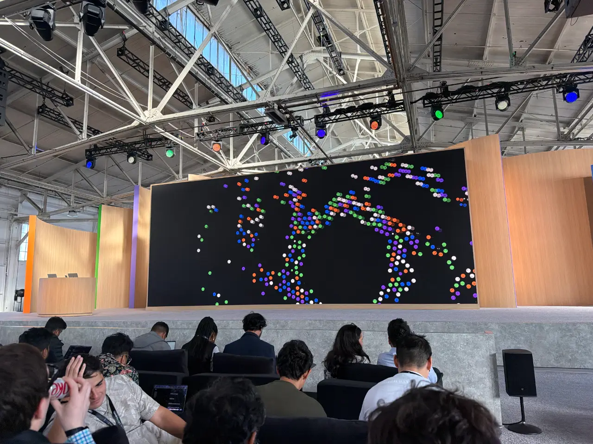
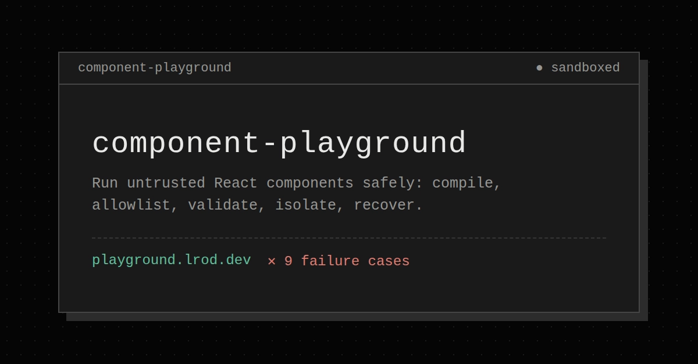
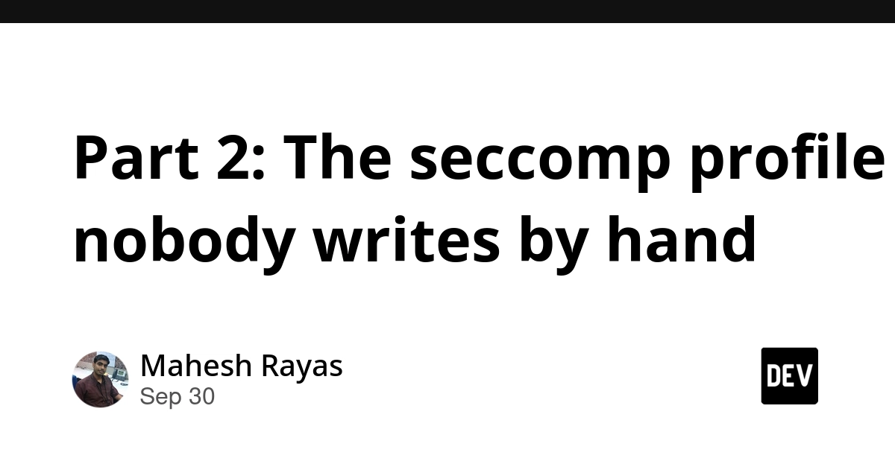
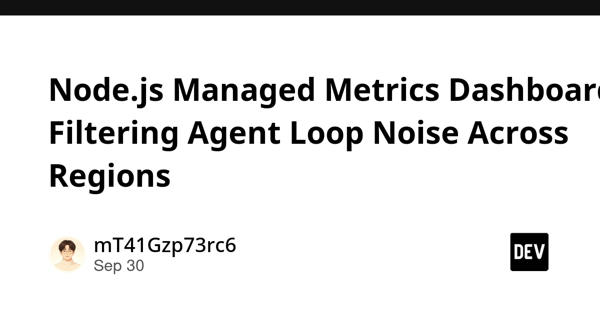
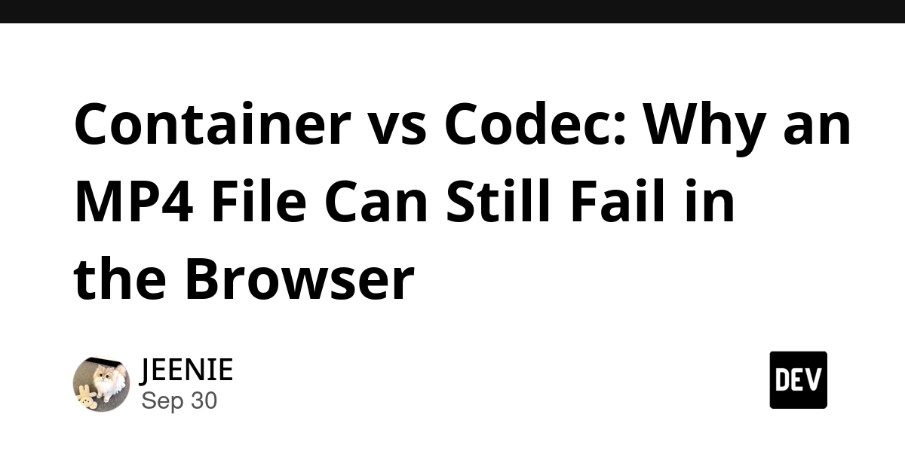
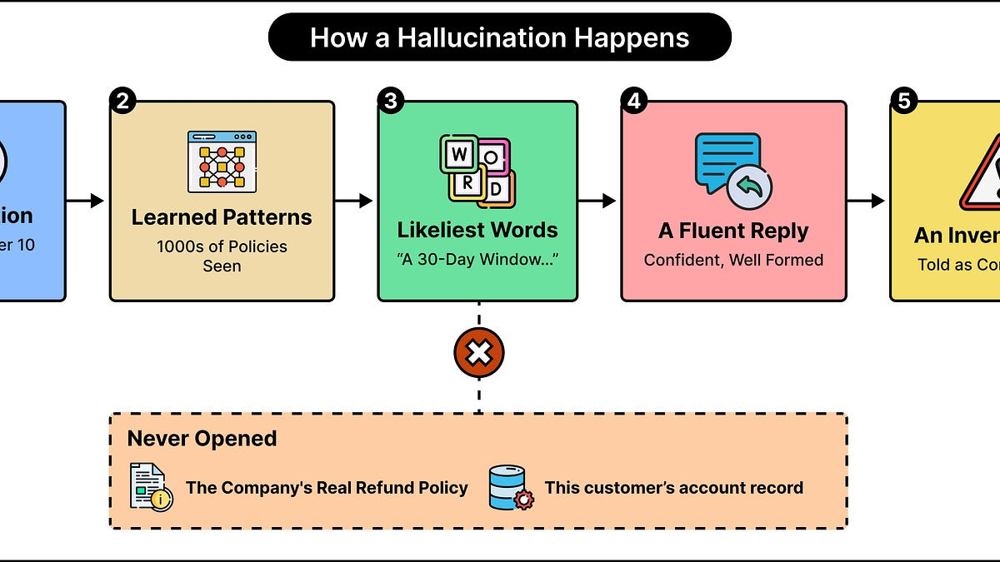
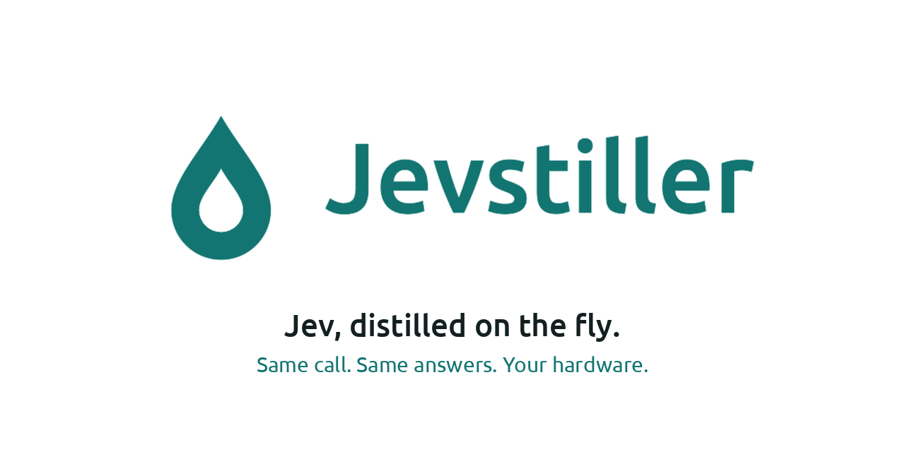
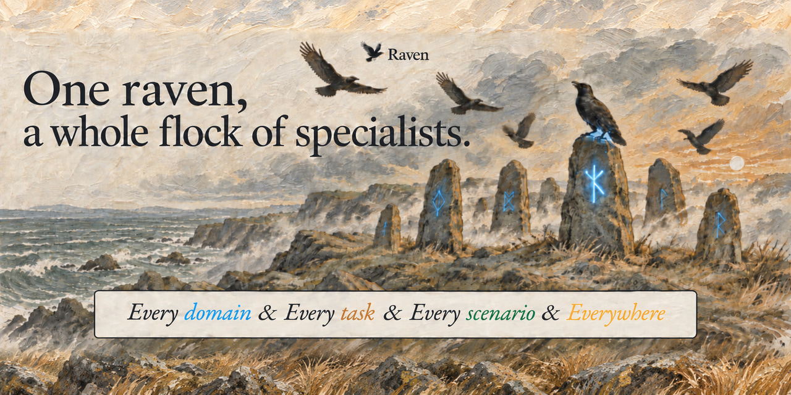
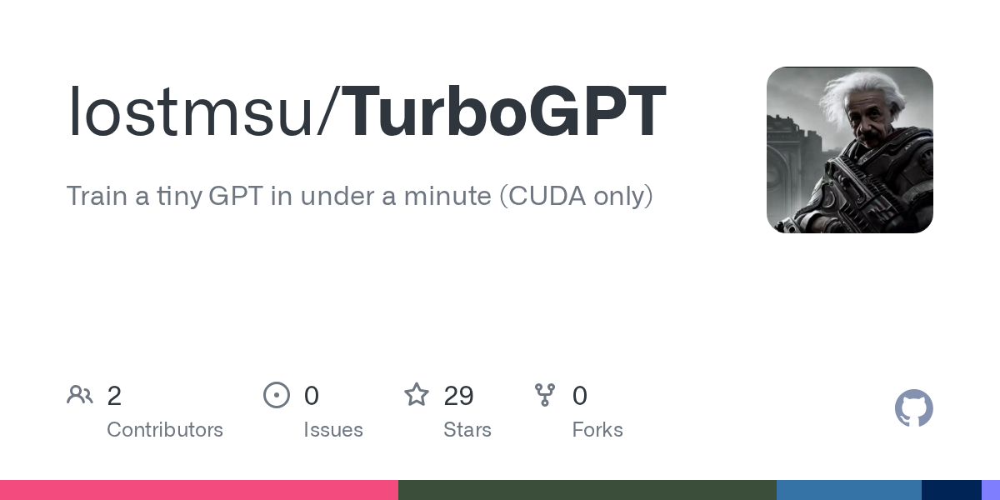

🔥 Top 3 (must read)
OpenAI DevDay 2026 live blog
Simon Willison live-blogged the DevDay keynote from San Francisco. The headline launch is GPT-6.1 Sol, pitched as "near-Astra intelligence for a fifth of the price". Why it matters: a big price drop on a strong model changes the cost math for any LLM feature or coding-agent pipeline your team runs. Worth a re-check of which model sits behind your prompts.

Running untrusted React components in the browser
Page builders, plugin systems and custom dashboards all end up running user-written UI code. This walkthrough builds a playground where a TSX component compiles and renders live while broken or hostile code cannot break the rest of the page. Why it matters: a hands-on isolation pattern for React apps that need plugins or user-authored widgets, a problem most product teams hit eventually.

The seccomp profile for Kubernetes pods nobody writes by hand
A container uses about 70 of Linux's 300-odd syscalls. kguardian uses eBPF to observe which ones, generates a least-privilege seccomp profile, and warns when the profile goes stale. Why it matters: generated least-privilege pod security is a practical hardening step for teams on Kubernetes who never got around to writing seccomp profiles.

🛠 Tools & releases
Node.js managed metrics dashboard: filtering agent-loop noise across regions
start with five low-cardinality measures (loop completions, end-to-end duration, model-call duration, tokens, estimated cost) and keep prompts and error text out of metric labels before comparing Prometheus/Grafana alternatives.

Container vs codec: why an MP4 can still fail in the browser
the file extension is the container, the codec is what actually needs browser support. A quick explainer for anyone debugging video playback bugs in web or mobile apps.

🤖 AI for developers
GPT-6.1 Sol: near-Astra intelligence for a fifth of the price
Willison's HN comment and pelican tests on the new cheaper OpenAI model announced at DevDay.
S
A privacy analysis of web and mobile conversational AI agents (PDF)
.pdf) (HN, 411 points) — study of what AI chat agents in web and mobile apps collect and share. Useful if you embed an assistant in your app and need to answer privacy questions.
J
Why do LLMs lie?
ByteByteGo on why hallucinations happen and the techniques that make LLM answers more dependable. Good primer to share with a team adding LLM features.

🎯 For me
Untrusted React components is the closest stack hit: sandboxing user-written TSX is directly reusable for plugin or widget systems in a React product.
Node.js metrics dashboard gives a concrete label-hygiene rule (no prompts, IDs, or error text in labels) that also applies to your existing Node services, not only agent loops.
GPT-6.1 Sol pricing is a reason to review model choice in any Node-side LLM calls this week.
💡 App ideas & indie builds
Real-time Solar System with 526k asteroids and all tracked satellites
(HN) — a browser visualization of every tracked asteroid and satellite, live. The problem: public orbital data exists but is hard to see and explore. Inspiration: turning a big open dataset into a single, beautiful interactive view is a whole app on its own.
S
NSL – WSL for Linux
(HN) — brings the WSL-style "run another Linux distro as a lightweight subsystem" experience to Linux hosts. The problem: developers want per-project isolated distros without full VMs or Docker friction. Inspiration: copy a well-loved workflow from one platform to another where it is missing.
F
Jevstiller – distill Jev into a local model, with a disagreement bound
(HN) — distills a large model into a small local one and publishes a bound on how often the two will disagree. The problem: people want local, cheap models but need to know how much quality they give up. Inspiration: "measure the gap and promise it" is a strong trust feature for any AI product.

Raven – the harness of harnesses, built for RSI
(HN, 49 comments) — an agent harness that wraps and orchestrates other agent harnesses. The problem: teams juggle many coding-agent setups with no common layer. Inspiration: meta-tooling around coding agents is an open space, and the HN thread shows the debate around it.

TurboGPT: train a 22 KiB transformer in 13 seconds
(HN) — a tiny, fast-to-train transformer. The problem: learning how transformers work is slow and GPU-heavy. Inspiration: tiny, instant-feedback learning tools are a great side-project shape.

🎓 Try this
Open the untrusted React components playground from the dev.to article, write a deliberately broken TSX component, and watch how the host page keeps working. Then read the article to see how the isolation is built. A cheap afternoon experiment if you have ever wanted plugins or user-authored widgets in a React app.